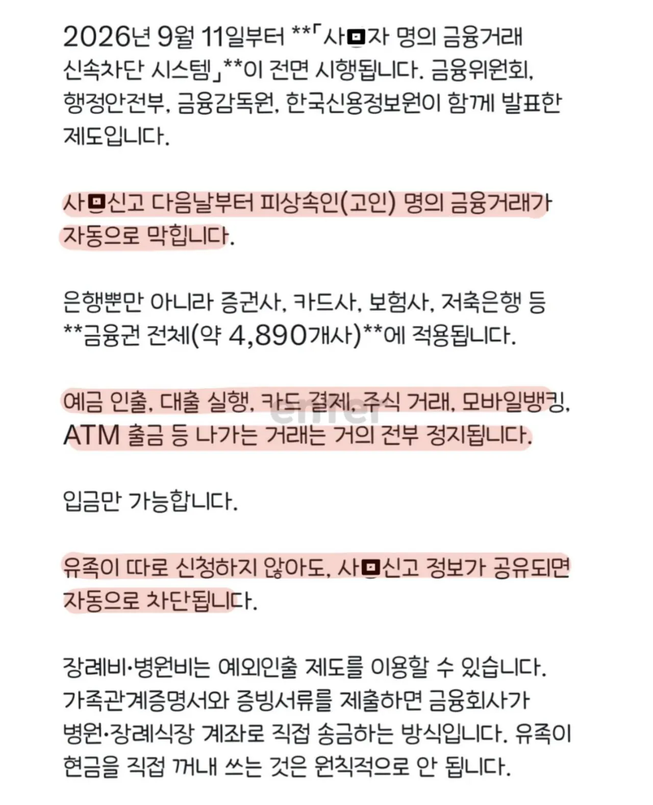
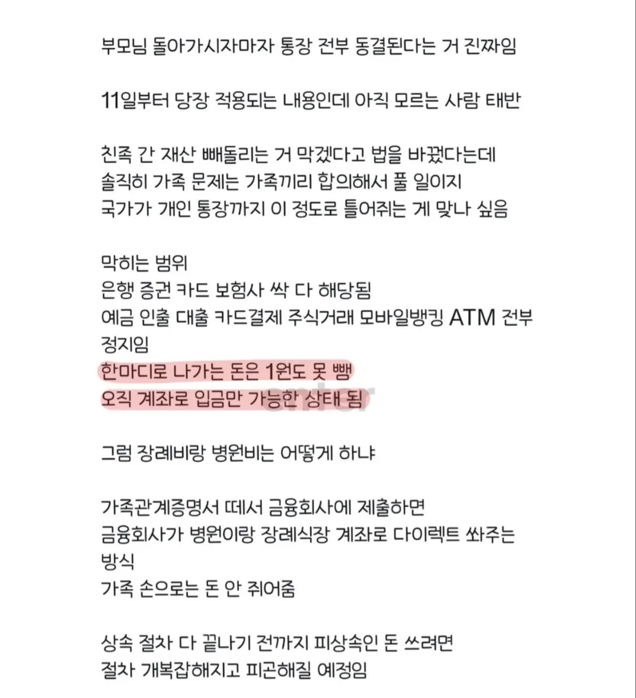

https://www.connecticheon.com/ko-kr/articles/1592


https://www.connecticheon.com/ko-kr/articles/1592
원칙상 본인아니면 출금못하긴함
안심상속서비스(사망자재산조회)신청하면 금융기관에 통보돼서 인출금지 됨
신고하면 지금도 통장에서 인출 안됨.
차이가 뭔지 모르겠는데 지금은 사망신고를 주민센터 하는 시점부터니깐 이게 병원에서 사망 확인되는 시점으로 바뀐다면 빨라지는건 맞음.
그런데 본문에도 사망신고라고 써있어서 모르겠네..
어라, 이거 원래 그러지 않았나? 울 아버지 돌아가시고 사망신고 말고 금융권에 별도의 신고 없이도 바로 인출금지 되었던 것 같은데... 기억이 가물가물 하네.